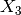
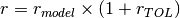
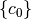

Python API¶
The functionalities of the GUI can all be accessed through command lines. Although the GUI is more convenient for small to middle studies, the Python API allows the configuration of big studies where many different parameters can be changed between the different models.
Creating a Model from the Database¶
Example:
from desicos.abaqus.conecyl import ConeCyl
cc = ConeCyl()
cc.fromDB('huehne_2008_z07')
cc.create_model()
Applying Measured Imperfections using the Imperfection Database¶
Function desicos.abaqus.apply_imperfections.translate_nodes_ABAQUS() can be readily used to apply imperfections from the database in a given finite element model (cylinder or cone).
- desicos.abaqus.apply_imperfections.translate_nodes_ABAQUS(imperfection_file_name, model_name, part_name, H_model, H_measured, R_model, R_best_fit=None, semi_angle=0.0, stretch_H=False, z_offset_bot=None, rotatedeg=0.0, scaling_factor=1.0, r_TOL=1.0, num_closest_points=5, power_parameter=2, num_sec_z=50, nodal_translations=None, use_theta_z_format=False, ignore_bot_h=None, ignore_top_h=None, sample_size=None)[source]¶
Translates the nodes in Abaqus based on imperfection data
The imperfection amplitude for each node is calculated using an inversed weight function (see desicos.conecylDB.interpolate.inv_weighted()).
Parameters: imperfection_file_name : str
The full path to the imperfection file, which must be a file with three columns containing the x, y, z coordinates when use_theta_z_format=False or containing x, theta, amplitude when use_theta_z_format=True.
model_name : str
Must be a valid key in the dictionary mdb.models, in the interactive Python inside Abaqus.
part_name : str
Must be a valid key in the dictionary mdb.models[model_name].parts, in the interactive Python inside Abaqus.
H_model : float
Total height of the model where the imperfections will be applied to, considering also eventual resin rings.
H_measured : float
The total height of the measured test specimen, including eventual resin rings at the edges.
R_model : float
The radius of the current model. In case of cones this should be the bottom radius.
R_best_fit : float, optional
Best fit radius obtained with functions best_fit_cylinder() or best_fit_cone().
semi_angle : float, optional
The cone semi-vertex angle (a null value indicates that a cylinder is beeing analyzed).
stretch_H : float, optional
A boolean indicating if the imperfection pattern should be stretched when applied to the model. The measurement systems usually cannot obtain data for the whole surface, making it an option to stretch the data to fit the whole surface. In case stretch_H=False the measured data of the extremities will be extruded up to the end of the domain.
z_offset_bot : float, optional
This parameter allows the analyst to adjust the height of the measured data about the model, when the measured data is not available for the whole domain.
rotatedeg : float, optional
Rotation angle in degrees telling how much the imperfection pattern should be rotated about the  (or
 ) axis.
) axis.scaling_factor : float, optional
The scaling factor that will multiply the calculated imperfection amplitude.
r_TOL : float, optional
Parameter to ignore noisy data in the imperfection file, the points with a radius higher than  will not be considered in the interpolation.
num_closest_points : int, optional
power_parameter : int, optional
num_sec_z : int, optional
Number of cross sections that will be used to classify the points spatially in the inverse-weighted algorithm.
nodal_translations : None or numpy.ndarray, optional
An array containing the interpolated traslations, which is passed to avoid repeated calls to the interpolation functions.
use_theta_z_format : bool, optional
A boolean to indicate whether the imperfection file contains x, y, z positions or theta, z, amplitude.
ignore_bot_h : None or float, optional
Used to ignore nodes from the bottom resin ring.
ignore_top_h : None or float, optional
Used to ignore nodes from the top resin ring.
sample_size : int, optional
If the input file containing the measured data is too large it may be required to limit the sample size in order to avoid memory errors.
Returns: nodal_translations : numpy.ndarray
A 2-D array containing the translations x, y, z for each column.
Notes
Despite the nodal traslations are returned all the nodes belonging to this model will already be translated.
Applying Measured Imperfections using Fourier Series¶
Assuming the analyst already has the coefficients  that will build the imperfection function, as explained here, these can be directly used to calculate the imperfection amplitude of each node. The following example shows how this can be achieved using the module desicos.conecylDB.fit_data (it must be run inside Abaqus):
from desicos.abaqus.apply_imperfections import translate_nodes_ABAQUS_c0
model_names = mdb.models.keys()
nodal_translations = None
scaling_factors = [0.1, 0.25, 0.5, 0.75, 1., 1.25, 1.5, 1.75, 2., 2.5, 3.,
3.5, 4.]
part_name = 'Cylinder'
for scaling_factor, model_name in zip(scaling_factors, model_names):
nodal_translations = translate_nodes_ABAQUS_c0(m0, n0, c0,
funcnum=funcnum, model_name=model_name, part_name=part_name,
H_model=H_model, H_measured=H_measured, R_model=R_model,
scaling_factor=scaling_factor,
nodal_translations=nodal_translations,
fem_xaxis_from_bot2top=True)
it will translate all the nodes for each model according to the scaling factor adopted. See the function documentation for more details:
- desicos.abaqus.apply_imperfections.translate_nodes_ABAQUS_c0(m0, n0, c0, funcnum, model_name, part_name, H_model, semi_angle=0.0, scaling_factor=1.0, fem_meridian_bot2top=True, ignore_bot_h=None, ignore_top_h=None)[source]¶
Translates the nodes in Abaqus based on a Fourier series
The Fourier Series can be a half-sine, half-cosine or a complete Fourier Series as detailed in desicos.conecylDB.fit_data.calc_c0().
Parameters: m0 : int
Number of terms along the
 coordinate.
coordinate.n0 : int
Number of terms along the
 coordinate.
coordinate.c0 : numpy.ndarray
The coefficients that will give the imperfection pattern.
funcnum : int
The function type, as detailed in desicos.conecylDB.fit_data.calc_c0().
model_name : str
Must be a valid key in the dictionary mdb.models, in the interactive Python inside Abaqus.
part_name : str
Must be a valid key in the dictionary mdb.models[model_name].parts, in the interactive Python inside Abaqus.
H_model : float
Total height of the model where the imperfections will be applied to, considering also eventual resin rings.
semi_angle : float, optional
The cone semi-vertex angle (a null value indicates that a cylinder is beeing analyzed).
scaling_factor : float, optional
The scaling factor that will multiply c0 when applying the imperfections.
fem_meridian_bot2top : bool, optional
A boolean indicating if the finite element has the
axis starting
at the bottom or at the top.ignore_bot_h : None or float, optional
Used to ignore nodes from the bottom resin ring.
ignore_top_h : None or float, optional
Used to ignore nodes from the top resin ring.
Returns: nodal_translations : numpy.ndarray
A 2-D array containing the translations x, y, z for each column.
Notes
Despite the nodal traslations are returned all the nodes belonging to this model will be already translated.